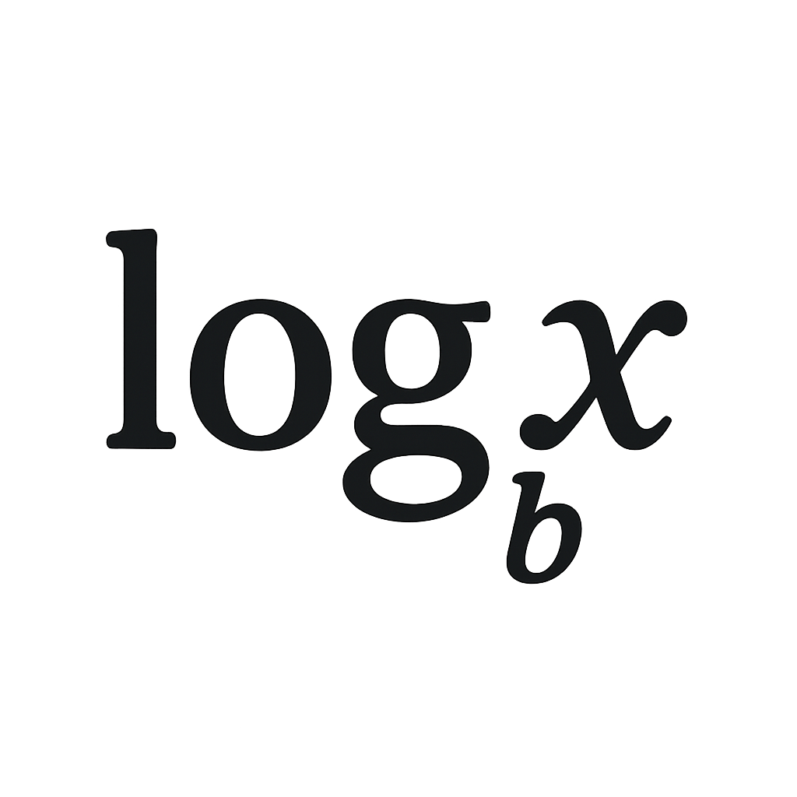

WMS-Lernplattform
☰
Navigation
📠Mathematik
Rechnungen in Z
Rechnungen in Q
Lineare Gleichungen
Quadratische Gleichungen
Potenzen & Logarithmen
Nutzenschwelle
Lineare Optimierung
Mathematik
Finanz- und Rechnungswesen
Wirtschaft und Recht
Rechnungen in Z
Rechnungen in Q
Lineare Gleichungen & Systeme
Quadratische Gleichungen

Potenzen & Logarithmen
Nutzenschwelle
📈
Lineare Optimierung
📊
Kaufmännische Buchführung
🧾
Doppelte Buchführung
💰
Rechnungsabschluss
🏦
Bankgeschäfte
💱
Fremde Währungen
⚖️
Vertragsrecht
📑
Staatsrecht
🏛️
Politisches System
📈
Volkswirtschaft
🏢
Betriebswirtschaft